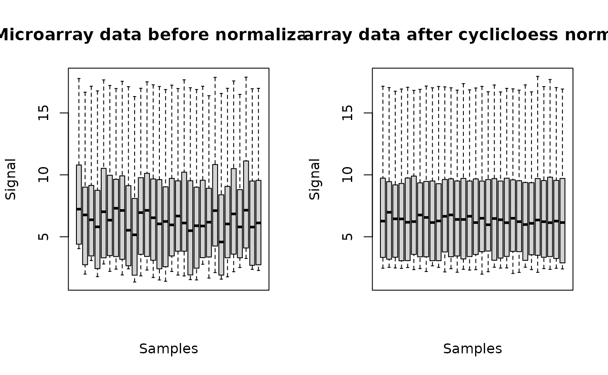
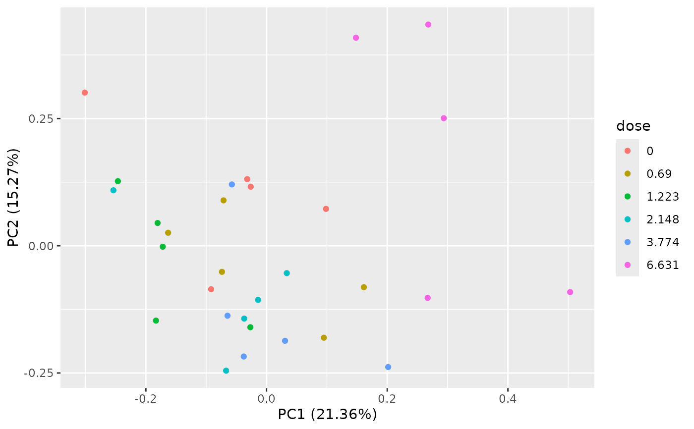
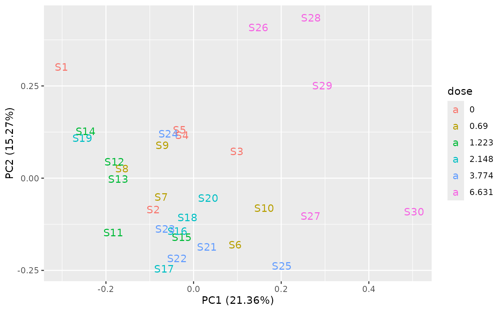
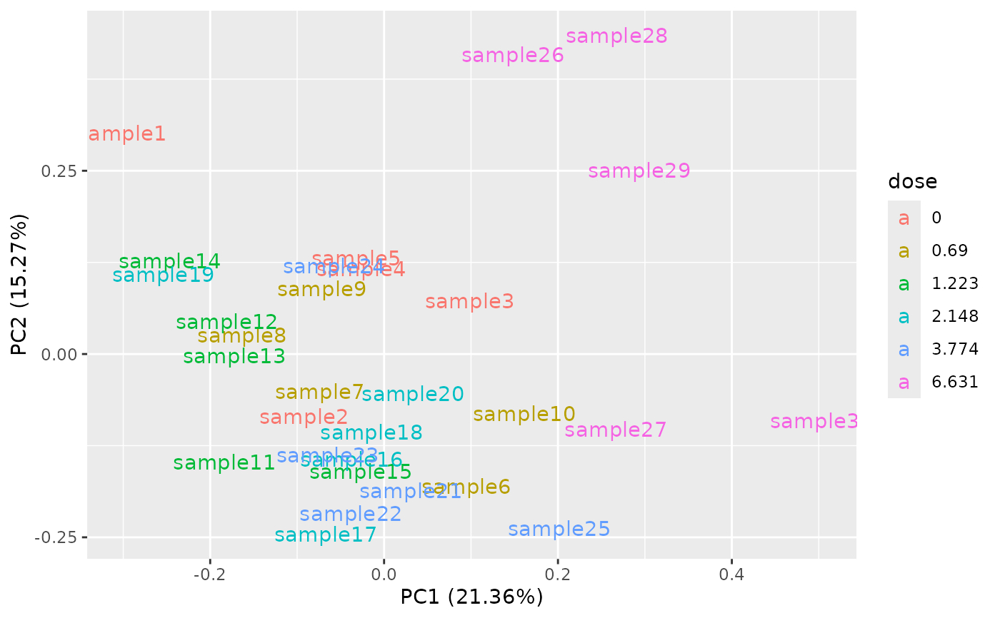
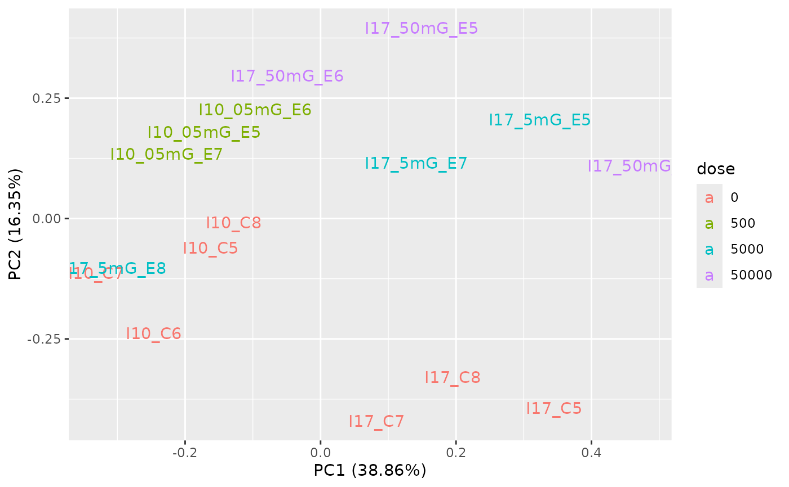
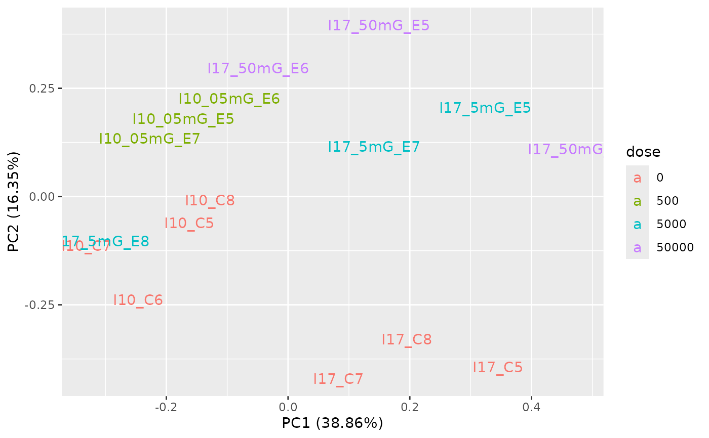

Performs and plots the results of a PCA on omic data
PCAdataplot.RdProvides a two dimensional plot (two first components) of a principal component analysis (PCA) performed on omic data after normalization and/or transformation, to check the promiximity of samples exposed to the same dose and optionally the presence/absence of a potential batch effect.
Arguments
- omicdata
An object of class
"microarraydata","RNAseqdata"or"continuousomicdata"respectively returned by functionsmicroarraydata,RNAseqdataorcontinuousomicdata.- batch
Optionnally a factor coding for a potential batch effect (factor of length the number of samples in the dataset).
- label
Could be FALSE (default choice), TRUE or a character vector defining the sample names. In the two last cases, the points are replaced by labels of samples (so the batch cannot be identified by the shape of points, but may appear in the sample names.
Examples
# (1) on a microarray dataset
#
datafilename <- system.file("extdata", "transcripto_very_small_sample.txt",
package="DRomics")
o <- microarraydata(datafilename, check = TRUE, norm.method = "cyclicloess")
#> Just wait, the normalization using cyclicloess may take a few minutes.
print(o)
#> Elements of the experimental design in order to check the coding of the data:
#> Tested doses and number of replicates for each dose:
#>
#> 0 0.69 1.223 2.148 3.774 6.631
#> 5 5 5 5 5 5
#> Number of items: 100
#> Identifiers of the first 20 items:
#> [1] "1" "2" "3" "4" "5.1" "6.1" "7.1" "8.1" "9.1" "10.1"
#> [11] "11.1" "12.1" "13.1" "14.1" "15" "16.1" "17.1" "18.1" "19.1" "20.1"
#> Data were normalized between arrays using the following method: cyclicloess
plot(o)

PCAdataplot(o)

PCAdataplot(o, label = TRUE)

samplenames <- paste0("sample", 1:ncol(o$data))
PCAdataplot(o, label = samplenames)

# \donttest{
# (2) an example on an RNAseq dataset with a potential batch effect
#
data(zebraf)
str(zebraf)
#> List of 3
#> $ counts: int [1:1000, 1:16] 453 331 897 12 326 533 1948 904 583 154 ...
#> ..- attr(*, "dimnames")=List of 2
#> .. ..$ : chr [1:1000] "ENSDARG00000102141" "ENSDARG00000102123" "ENSDARG00000114503" "ENSDARG00000115971" ...
#> .. ..$ : chr [1:16] "I10_05mG_E5" "I10_05mG_E6" "I10_05mG_E7" "I10_C5" ...
#> $ dose : num [1:16] 500 500 500 0 0 0 0 50000 50000 50000 ...
#> $ batch : Factor w/ 2 levels "I10","I17": 1 1 1 1 1 1 1 2 2 2 ...
data4DRomics <- formatdata4DRomics(signalmatrix = zebraf$counts,
dose = zebraf$dose)
o <- RNAseqdata(data4DRomics, transfo.method = "vst")
#> converting counts to integer mode
#> converting counts to integer mode
#> Warning:
#> To optimize the dose-response modelling, it is recommended to use a
#> dose-response design with at least six different tested doses.
PCAdataplot(o, batch = zebraf$batch)
 PCAdataplot(o, label = TRUE)

# }
PCAdataplot(o, label = TRUE)

# }